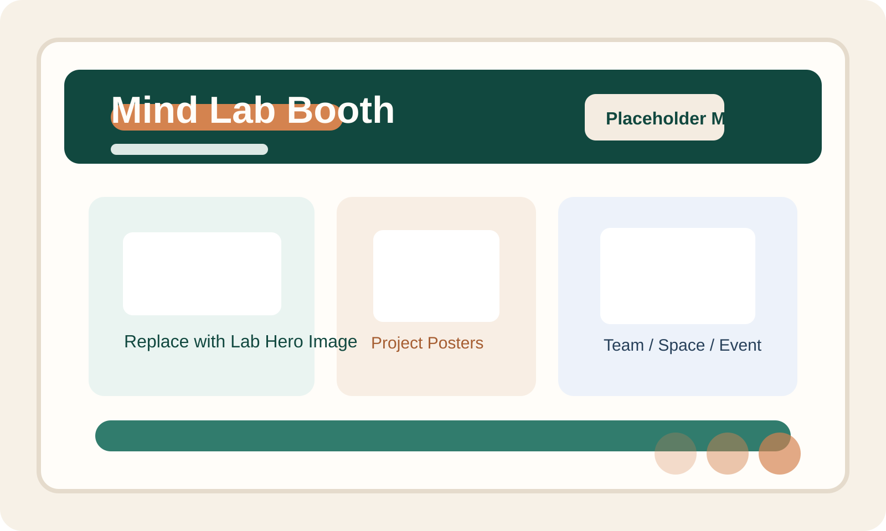

智能绘本面向儿童内容创作、图文故事表达与教育场景中的互动式阅读辅助。 当前页面作为统一风格的中转展示页，帮助用户在 Mind Lab 网站内先了解产品定位， 再进入外部正式系统继续体验。

建议后续在这里替换为智能绘本系统首页截图、绘本生成示例或核心流程视觉素材。
适合用于绘本内容生成、故事化表达、儿童阅读辅助和图文创作展示等应用方向。
面向教师、家长、儿童内容创作者，以及关注教育内容表达的研究与产品团队。
当前通过中转页方式接入，点击按钮后将跳转至外部正式系统页面继续使用。
1. 先阅读本页提供的产品简介和适用场景，帮助用户快速建立理解。
2. 点击“进入系统”按钮后，会在新标签页打开智能绘本正式平台。
3. 如后续拿到开放接口，也可以再升级为站内直接交互版本。